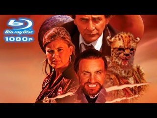
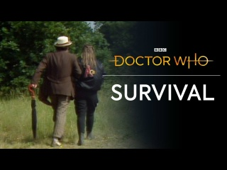
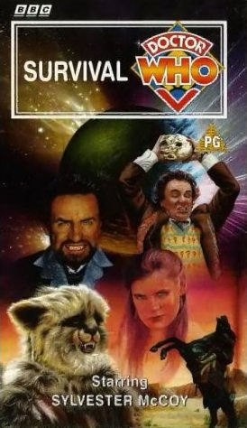
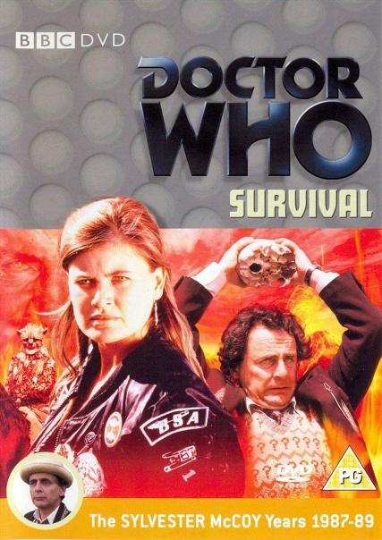
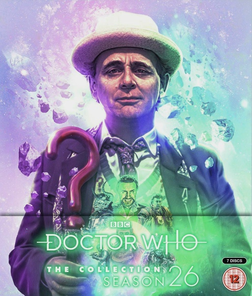
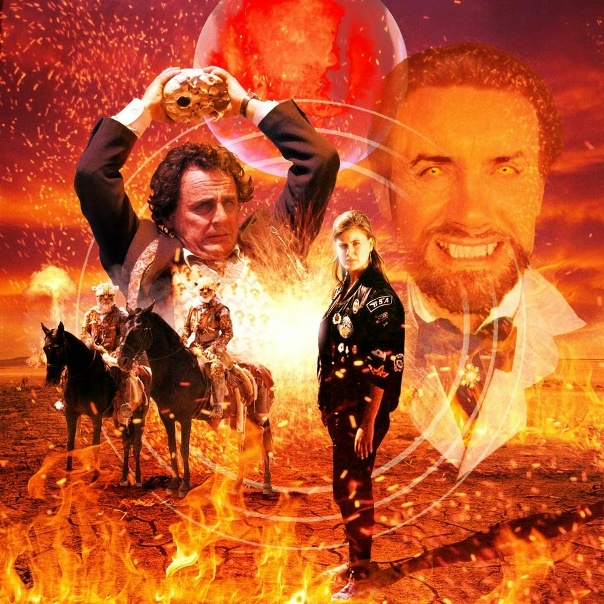
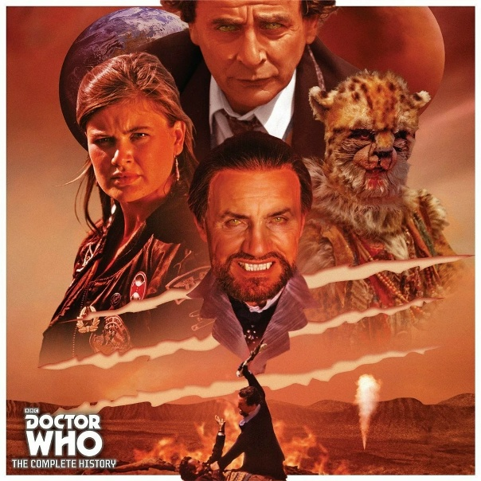
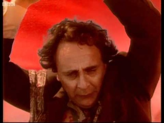

Субтитры: Русские {Антон Линевский} и Английские |  |
|---|---|
Субтитры: только Английские |  |
Survival
Дата выхода: 22 ноября - 6 декабря 1989
Формат: 3 эпизода по 25 мин.
|
Доктор привозит Эйс в родной Перивейл, но её старые друзья один за другим исчезают. Расследование приводит к существам, похожим на кошек и способным телепортироваться сквозь пространство, — людям-гепардам и их спутникам китлингам. А за всем стоит старый враг Доктора, которому тоже не чужда природа этой странной планеты.
Последняя серия классического «Доктора Кто» — показана с 22 ноября по 6 декабря 1989 года. Сценарий Роны Манро, единственной женщины-сценариста классического сериала (она вернётся к «Доктору Кто» в 2017 году с серией «Поедатели света»). Последнее появление Энтони Эйнли в роли Мастера на телевидении. Продюсер Джон Натан-Тёрнер, чувствуя, что сериал могут не продлить, попросил Эндрю Картмела написать финальный монолог — его записали 23 ноября, в 26-ю годовщину сериала. «Там, снаружи, есть миры, где небо горит... где-то ещё чай стынет! Пойдём, Эйс — у нас есть работа».
 VHS - октябрь 1995 |  DVD - 16 апреля 2007 |  Blu-ray - 27 января 2020 * Версия в нашей группе |
|---|


